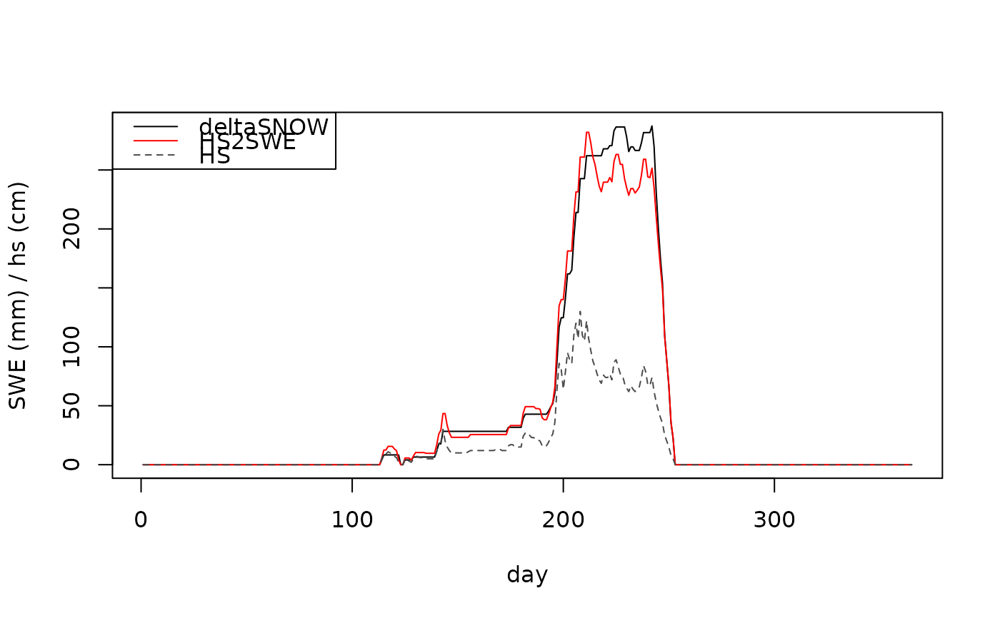

A model which translates snow depth observations to snow water equivalents
hs2swe.RdThe HS2SWE model is based on similar principles as the swe.delta.snow model.
It is described in the following publication:
Magnusson, J., B. Cluzet., L. Quéno, R. Mott, M. Oberrauch, G. Mazzotti, C. Marty, T. Jonas; 2025; Evaluating methods to estimate the water equivalent of new snow from daily snow depth recordings; Cold Regions Science and Technology, 233; 10.1016/j.coldregions.2025.104435.
Usage
hs2swe(
data,
RhoNew = 113.7,
RhoMax = 571.6,
SnoTemp = -0,
Visc = 60510000,
DQMultInc = 0.1,
DQMultMax = 5,
HsAcc = 2,
c1 = 2.8e-06,
c2 = 0.042,
c3 = 0.046,
c4 = 0.081,
c5 = 0.018,
g = 9.81,
dt = 86400
)Arguments
- data
A data.frame with at least two columns named
dateandhs. They should contain date and corresponding daily observations of snow depth \(hs \ge 0\) measured at one site. The unit must be meters (m). No gaps or NA are allowed. Dates must be either of class `character`, `Date` or `POSIXct` and given in the formatYYYY-MM-DD.- RhoNew
The density of new snow in kg/m³. Default is 113.7 kg/m³.
- RhoMax
The maximum density of snow in kg/m³. Default is 571.6 kg/m³.
- SnoTemp
The temperature of the snow in °C. Default is -0.000 °C.
- Visc
The viscosity of the snow in kg/m²/s. Default is 6.051e7 kg/m²/s.
- DQMultInc
The increment of the densification rate. Default is 0.1.
- DQMultMax
The maximum densification rate. Default is 5.
- HsAcc
The threshold for new snow fall in cm. Default is 2 cm.
- c1
The first coefficient for the densification rate. Default is 2.8e-6.
- c2
The second coefficient for the densification rate. Default is 0.042.
- c3
The third coefficient for the densification rate. Default is 0.046.
- c4
The fourth coefficient for the densification rate. Default is 0.081.
- c5
The fifth coefficient for the densification rate. Default is 0.018.
- g
The gravitational acceleration in m/s². Default is 9.81 m/s².
- dt
The time step in seconds. Default is 86400 seconds (1 day).
Details
The model is also available as matlab function, python package or in as R function that accepts a slightly different input from https://github.com/oshd-slf/HS2SWE
Examples
data(hsdata, package = "nixmass")
swe_deltasnow <- swe.delta.snow(hsdata)
swe_hs2swe <- hs2swe(hsdata)
plot(seq_along(hsdata$date), swe_deltasnow, type = "l", ylab = "SWE (mm) / hs (cm)", xlab = "day")
lines(seq_along(hsdata$date), swe_hs2swe, type = "l", col = "red")
lines(seq_along(hsdata$date), hsdata$hs * 100, type = "l", lty = 2, col = "grey30")
legend("topleft", legend = c("deltaSNOW", "HS2SWE", "HS"),
col = c("black", "red", "grey30"), lty = c(1, 1, 2))
